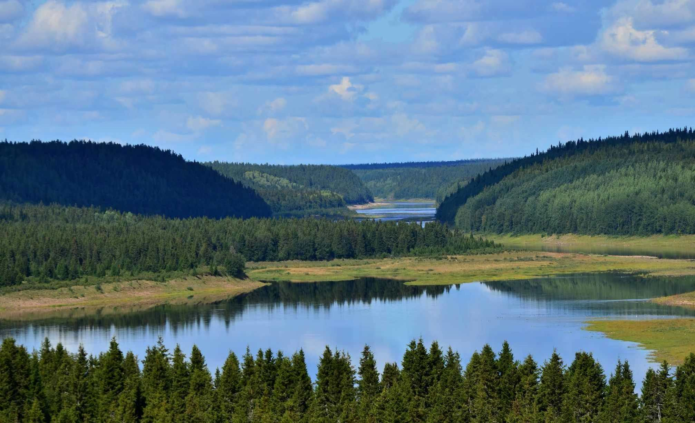
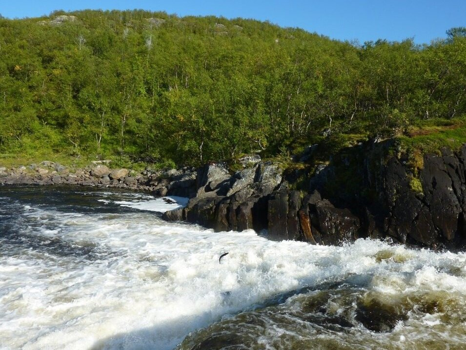
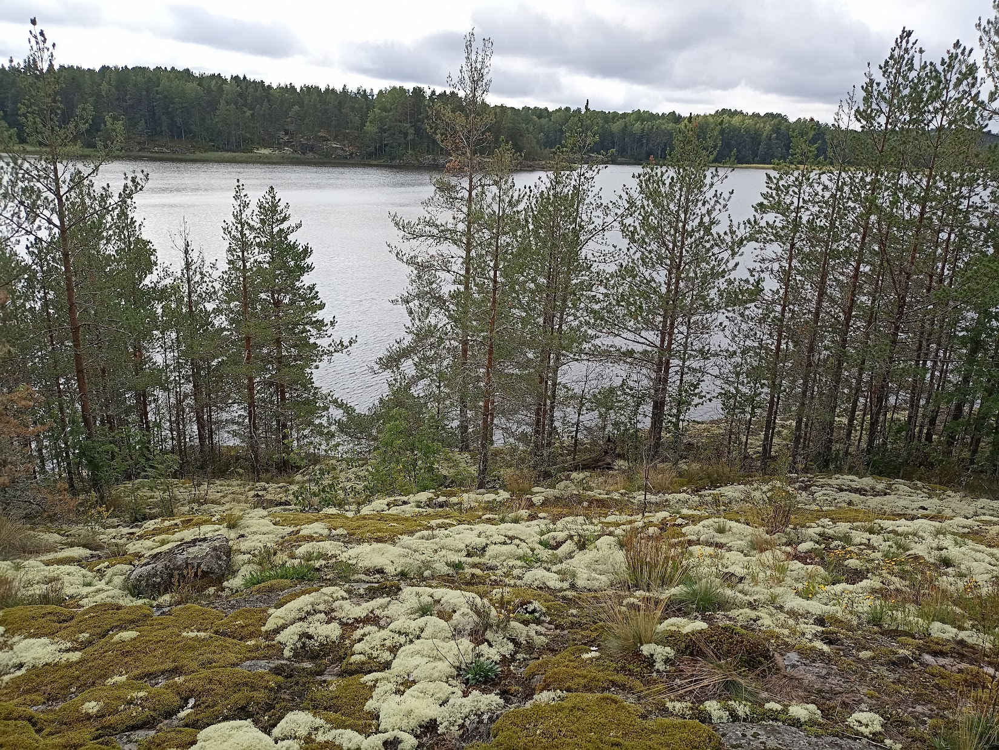
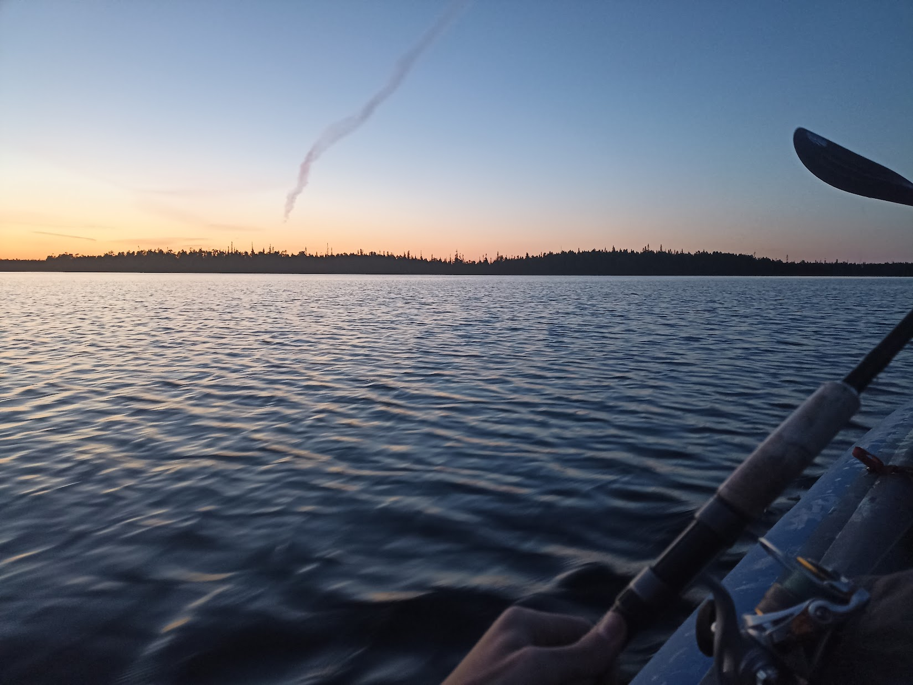

Приключение на севере
Мурманская область — рай для любителей водного туризма. Река Умба и озеро Энгозеро предлагают незабываемые виды.




Мурманская область — рай для любителей водного туризма. Река Умба и озеро Энгозеро предлагают незабываемые виды.



